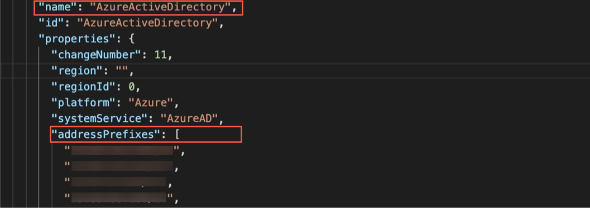
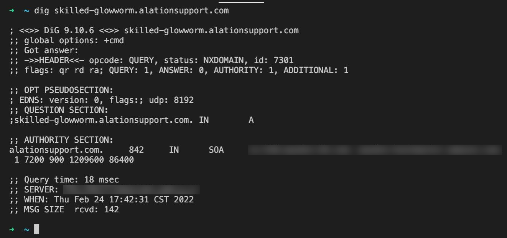
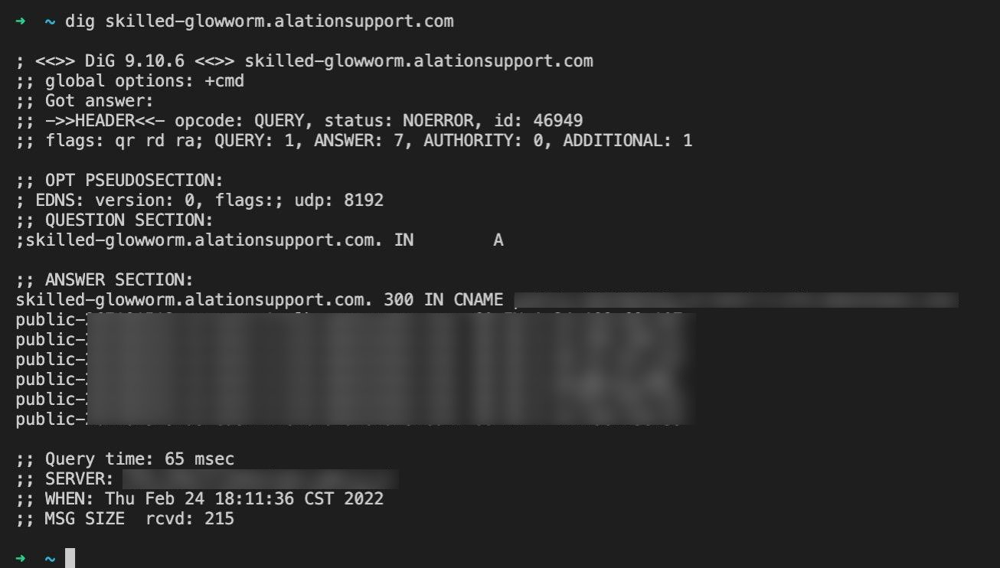

Troubleshoot SCIM Configuration¶
Alation Cloud Service Applies to Alation Cloud Service instances of Alation
Customer Managed Applies to customer-managed instances of Alation
Applies from release 2021.3
Logs¶
On customer-managed instances of Alation, you can check the logs for SCIM-related API calls. Logs are recorded at different logger levels (debug, info, and error) in different files in site/logs/ (path inside the Alation chroot):
scim-error.log: Logs the unexpected exceptions
scim-info.log: SCIM configuration errors and exceptions, authentication errors, and received API requests.
scim-debug.log: application behaviors pertaining to user lifecycle and group lifecycle.
Checking the Configuration¶
View SCIM Credentials¶
On customer-managed instances of Alation, you can view the currently set SCIM service account credentials from the Alation Django shell. To view the service account credentials for SCIM:
Use SSH to connect to the Alation server.
Enter the Alation shell using the following command:
sudo /etc/init.d/alation shell
Enter the Django shell:
alation_django_shell
From the Django shell, run the following code:
from rosemeta.utils.users_and_groups.configuration_utils import get_scim_basic_auth_info get_scim_basic_auth_info()
This will print the credentials to the console.
View SCIM Configuration¶
On customer-managed instances of Alation, you can view the SCIM configuration values in alation_conf. See: Viewing SCIM Configuration in alation_conf.
Allowing Okta IP Addresses¶
Issue in Okta¶
In the Okta user interface, when testing the connection between Alation and Okta during SCIM configuration, the following error occurs:
Error Authenticating: Null
Solution¶
On customer-managed instances of Alation:
Check the basic authentication username and password saved within Django.
Check the SCIM-related information in the SCIM application.
Check alation-debug.log for any authentication-specific errors.
On both Alation Cloud Service and customer-managed instances of Alation, there may be a network issue. The SCIM protocol requires network access to the Alation instance in order to send user and group packages to the corresponding REST API endpoint. To allow Okta to reach Alation, you need to allow access from the Okta IP address range relevant to your region to the network hosting the Alation server. Refer to the following Okta documentation for more details:
Test the connection again after you have enabled network access from the Okta IP addresses.
Allowing Azure AD IP Addresses¶
Issue in Azure AD¶
In the Azure portal interface, when testing the connection between Alation and the Azure application during SCIM configuration, the following error occurs:
Error code: systemForCrossDomainIdentitiyManagementCredentialValidationUnavilable
Details: We received this unexpected response from your application:
Message: An error occurred while sending the request
Solution¶
On customer-managed instances of Alation:
Check the basic authentication username and password saved within Django.
Check the SCIM-related information.
Check alation-debug.log for any authentication-specific errors.
On both Alation Cloud Service and customer-managed instances of Alation, there may be a network issue.
The Alation server in your network does not allow traffic from Azure AD.
Azure AD cannot resolve the DNS of the SCIM endpoint of the Alation server.
You need to ensure that the network policy in your network allows access from the Azure AD IP addresses for the Azure public cloud.
Find the Azure AD IP Range¶
The Azure AD provisioning service currently operates using the IP ranges for Azure Active Directory as listed in Azure IP Ranges and Service Tags – Public Cloud.
Important
The IPs in this list change every week. Alation strongly recommends adding an automation to regularly refresh the IPs in the load balancer security group.
In the file you download from Azure, find the AzureActiveDirectory tag and the IPs listed under this tag. The screenshot below shows an example of the IP address range as can be seen in the file.

Add Azure IPs to the Security Group of the Load Balancer¶
To allow traffic from the Azure AD provisioning service to the Alation server on your network, add the Azure IP range for AzureActiveDirectory to the security group of the load balancer of the network that hosts the Alation server.
After the IPs are added the connection test should be successful.
If not, this could be a DNS issue. Azure should be able to resolve the REST API endpoint of the Alation instance used by SCIM. This endpoint follows this format: https://mycatalog.alationdata.com/scim/v2/. Use the tips below to check if Azure AD can reach Alation.
Check if Azure AD Can Access Alation¶
Run dig <alation server name> from the Azure AD network to check if it can access the Alation server.
The screenshot below shows the output when we are not able to get an IP for the DNS name.

If you get a similar output, this may be due to the fact that the server can only be accessed through the internal VPN. Compare the output that shows that the DNS is successfully resolved and that returns IP addresses:

The solution will be specific to your network configuration. You can also contact Alation Support to help find a solution.
Error Messages¶
Alation follows exception handling as prescribed in the SCIM specification that defines exception types. Use the table below to interpret exceptions found in the logs.
Symptoms |
Example of Error Message |
Cause |
Resolution |
|---|---|---|---|
Admin changes a username in the IdP but the change is not reflected in Alation after the SCIM push |
Exception - Integrity: Can’t update username to <username>, user with that name already exists |
The username was updated to a username that already exists in Alation |
Change the username to a username value that does not exist in Alation |
Admin does not see a user in the SCIM group in Alation An update to a user profile is not reflected in Alation Un-assigning a user from the SCIM app did not deactivate this user in Alation |
Exception - NotFound: Not found user by identifier <uid> |
The user with UUID <uid> is not found in Alation. |
Re-assign the user to the SCIM app in the IdP |
Users are not synced to Alation |
Exception - InvalidValue: Required userName field is missing |
The userName field is missing |
Set userName as user resource identifier in the IdP |
Admin changes a Group name in the IdP but this change is not reflected in Alation after the SCIM push |
Exception - Integrity: Can’t update displayName to <name>, group with that name already exists |
The displayName of a Group is updated to a name which already exists in Alation |
Change the group displayName to a value that does not exist in Alation |
Admin does not see a SCIM group in Alation DisplayName updated in the IdP for a group is not updated in Alation Updated group members are not updated in Alation |
Exception - NotFound: Not found group by identifier <uid> |
The group with UUID <uid> is not not found in Alation |
Re-push the group in the IdP |
Authentication errors |
Exception - UnAuthorized: Authentication credentials were not provided Exception - UnAuthorized: Authentication Failed for user <user> Incorrect username or password |
Username and password set up in Alation for the SCIM client and the credentials provided for SCIM Basic Auth in the IdP do not match |
Check the SCIM client credentials in both Alation and the IdP. Make sure they match |
Bad API request errors |
Sync from directory provider flag is off or protocol flag is not SCIM on the Alation server. Please make sure enable sync from directory provider flag and choose SCIM as protocol SAML authentication mode is disabled at Service Provider (Alation). Please use SAML authentication method in Alation |
SCIM sync is not enabled |
Enable SCIM sync in the Alation Django shell |
Filter query errors |
Exception - InvalidFilter: Incorrect filtering format. More info <…> Exception - InvalidFilter: Invalid filter operation or unsupported operator. Supported operation: [‘eq’] Exception - InvalidFilter: Invalid filter attribute. Only support userName for users and displayName for groups. |
Filtering users or groups resource format is incorrect |
Verify the resource format set in the IdP or raise a Support ticket for Alation to review the errors and propose a solution |
PATCH method Bad request |
Exception - BadRequest: PATCH call made without operations array Exception - InvalidFilter: Unknown PATCH op Exception - InvalidFilter: “value” must be specified during “add” PATCH calls Exception - NoTarget: “path” must be specified during “remove” PATCH calls |
The patch request does not follow the SCIM specification or is not supported by Alation |
Verify the IdP settings or raise a Support ticket for Alation to review the errors and propose a solution |